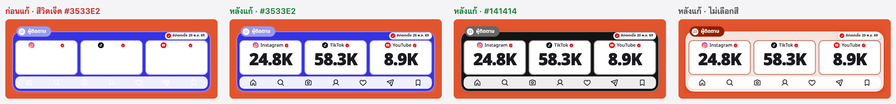
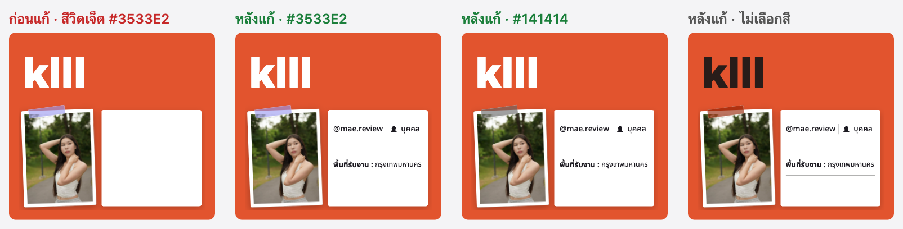
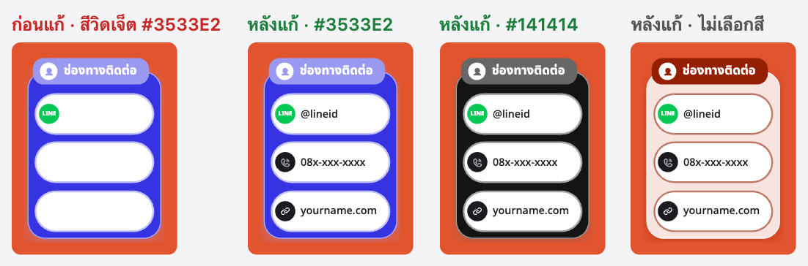
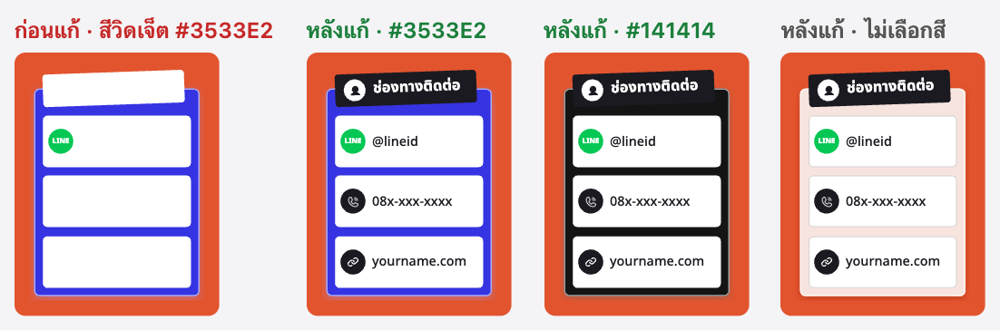
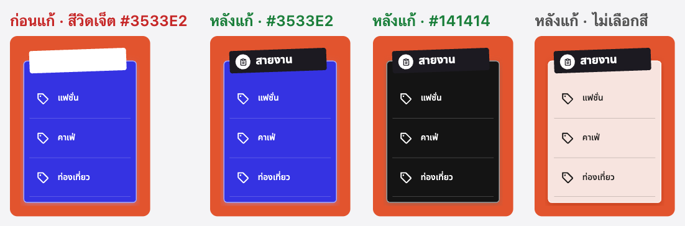
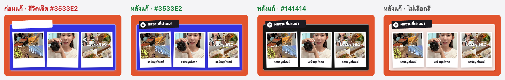

ตัวหนังสือหายเมื่อเลือกสีวิดเจ็ต
20 พ.ย. 2569 · แก้เฉพาะ 6 widget ชุดสติกเกอร์ (pop) ที่เห็นในรูป · แก้ที่ JSON ใน shared/WidgetSpecs อย่างเดียว
เกิดอะไรขึ้น
ในแอป (salehere-ios) พอเลือก สีวิดเจ็ต แผ่นของ widget จะกลายเป็นสีที่เลือก แล้วหมึก ink จะเปลี่ยนให้อ่านออกบนสีนั้น พอเลือกสีเข้ม (เช่น #3533E2 หรือดำ) หมึกเลยกลายเป็นสีขาว
แต่ 6 widget นี้มีกล่องขาวตายตัว (กล่องตัวเลข, กล่องข้อมูล, แถวช่องทางติดต่อ) และป้ายหัวข้อ/วงกลมไอคอนที่ใช้พื้น ink → ตัวหนังสือขาวบนกล่องขาว และป้ายกลายเป็นแถบขาวเปล่า
แก้ยังไง
ส่วนที่วางบนกล่องขาวตายตัว เปลี่ยนจาก ink เป็นสีเข้มตายตัว #1C1A21 (หมึกเดิมของชุด Pop) แบบเดียวกับป้าย "อัปเดตเมื่อ" ที่ใช้ #1F1F23 อยู่แล้ว · ส่วนพื้นป้าย/วงกลมไอคอนที่เคยเป็น ink ก็เปลี่ยนเป็น #1C1A21 เหมือนกัน
ไม่เลือกสีวิดเจ็ต = หน้าตาแทบเท่าเดิม (หมึกเดิมก็เกือบดำอยู่แล้ว) · ข้อแลก: การ์ดคู่สี (duo) ตัวหนังสือในกล่องขาวจะไม่อมสีของคู่สีแล้ว
สรุปทุกจุดที่แก้
| Widget | ส่วนที่แก้ | จาก → เป็น |
|---|---|---|
| ผู้ติดตามสามช่อง04-ผู้ติดตาม/popStatsGlass.json | ชื่อช่อง (Instagram/TikTok/YouTube), ยอดผู้ติดตาม, ไอคอน 7 ตัวในแถบล่าง | ink → #1C1A21 |
| โปรไฟล์ (กระดาษ)01-โปรไฟล์/popHeroPaper.json | กล่องข้อมูลขาว: @, handle, ไอคอนคน, สายงาน, "พื้นที่รับงาน :", พื้นที่ | ink → #1C1A21 |
| ติดต่อ (กระจก)10-ติดต่อ/popContactGlass.json | LINE id, เบอร์, เว็บ วงกลมไอคอนโทร/ลิงก์ | ink → #1C1A21พื้น ink → #1C1A21 |
| ติดต่อ (กระดาษ)10-ติดต่อ/popContactPaper.json | LINE id, เบอร์, เว็บ, ไอคอนคนในป้าย วงกลมไอคอนโทร/ลิงก์, พื้นป้าย "ช่องทางติดต่อ" | ink → #1C1A21พื้น ink → #1C1A21 |
| หมวดหมู่ (กระดาษ)06-หมวดหมู่/popNichePaper.json | ไอคอนในป้าย พื้นป้าย "สายงาน" | ink → #1C1A21พื้น ink → #1C1A21 |
| ผลงาน (กระดาษ)13-รูปผลงาน/popWorkPaper.json | "รอข้อมูลโพสต์", ไอคอนเหรียญในป้าย พื้นป้าย "ผลงานที่ผ่านมา" | ink → #1C1A21พื้น ink → #1C1A21 |
ไม่ได้แตะ: layout, ขนาด, ตัวเลือก, widget อื่นทั้งหมด · ไม่ได้แก้โค้ด iOS/Android/เว็บ
ก่อน / หลัง
ภาพจากตัววาดบนเว็บ (sync-server) ที่จำลองการทำงานของสีวิดเจ็ตแบบ salehere-ios · ก่อนแก้ เลือกสี #3533E2 · หลังแก้ #3533E2 / ดำ #141414 / ไม่เลือกสี
ผู้ติดตามสามช่อง
- ตัวเลขผู้ติดตาม + ชื่อช่อง กลับมา
- ไอคอนแถบล่างกลับมา

โปรไฟล์ (กระดาษ)
- กล่องข้อมูลขาวข้างรูป กลับมามีตัวหนังสือ

ติดต่อ (กระจก)
- LINE / เบอร์ / เว็บ กลับมา
- วงกลมไอคอนโทร/ลิงก์ กลับมาเป็นวงกลมดำ

ติดต่อ (กระดาษ)
- ป้าย "ช่องทางติดต่อ" กลับมาเป็นเทปดำ
- LINE / เบอร์ / เว็บ + วงกลมไอคอน กลับมา

หมวดหมู่ (กระดาษ)
- ป้าย "สายงาน" กลับมาเป็นเทปดำ

ผลงาน (กระดาษ)
- ป้าย "ผลงานที่ผ่านมา" กลับมาเป็นเทปดำ
- "รอข้อมูลโพสต์" ใต้รูปกลับมา
